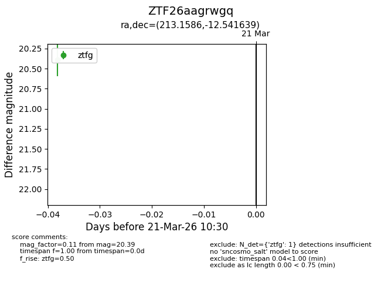
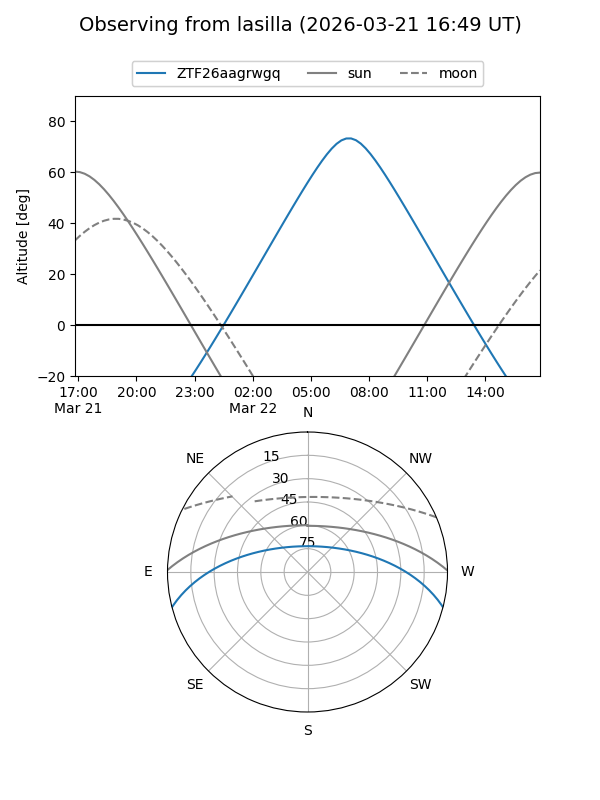
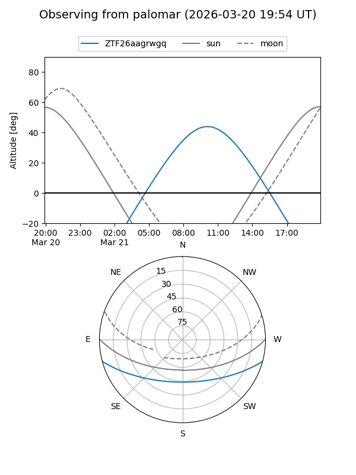

ZTF26aagrwgq
Target ZTF26aagrwgq at 2026-03-21 10:32
Aliases and brokers:
FINK: link
Lasair: link
ALeRCE: link
alt names
ZTF26aagrwgq (ztf,fink_ztf)
Coordinates:
equatorial (ra, dec) = 213.1586,-12.54164
equatorial (HMS+DMS) = 14:12:38.07,-12:32:29.90
galactic (l, b) = (331.9403,+45.70720)
Flags:
Photometry:
last ztfg=20.39
1 ztfg detections
Lightcurve

Visibility


Additional plots